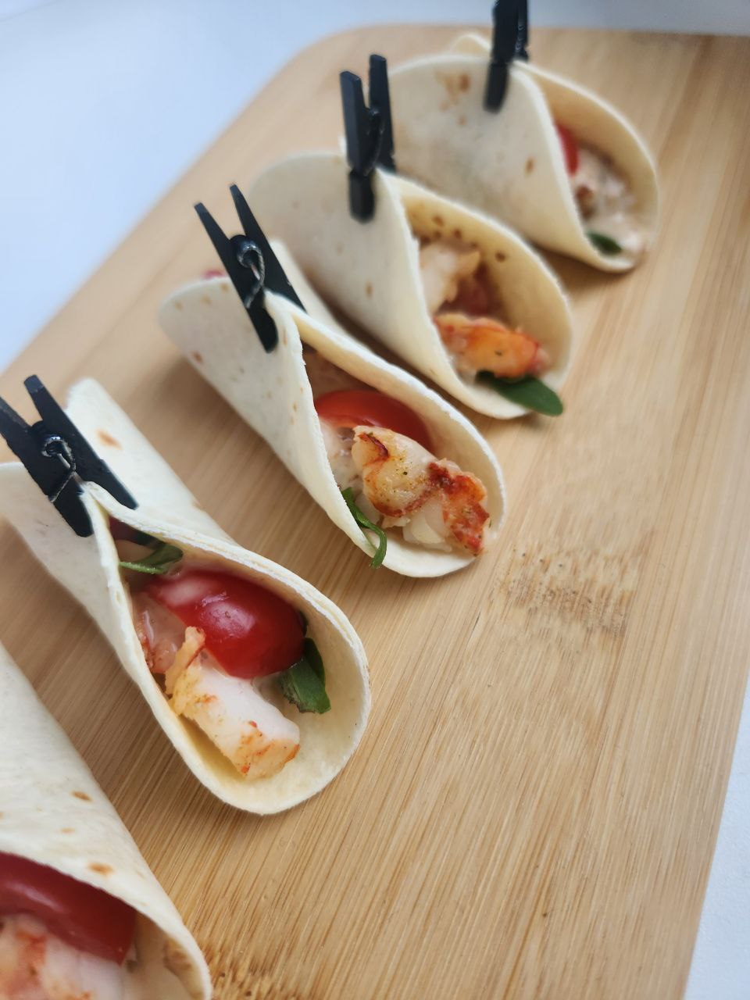

Кесадилья с курицей
Вкусная мексиканская закуска с курицей, сыром и овощами.
На нашем сайте вы найдете рецепты вкусных закусок и канапе для любого случая.
Вкусная мексиканская закуска с курицей, сыром и овощами.
Итальянская закуска на хрустящем хлебе с томатами, базиликом и чесноком.
Миниатюрные бутерброды с копченым лососем, крем-сыром и зеленью.
Свежие фрукты на шпажках - легкий и освежающий вариант закуски.